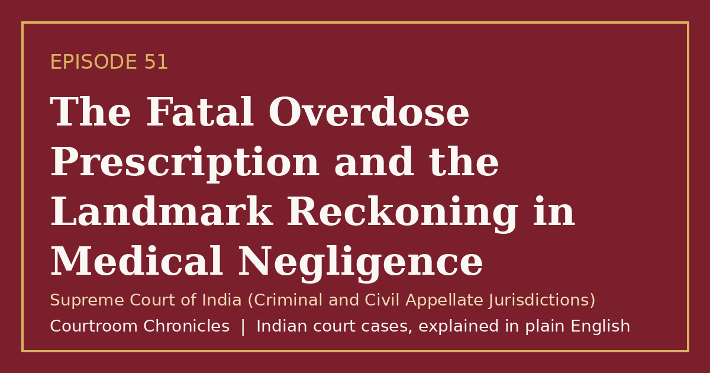

Episode 51
The Fatal Overdose Prescription and the Landmark Reckoning in Medical Negligence
A fifteen-year legal battle over a massive steroid overdose reshaped medical negligence accountability and produced a record compensation award.
Criminal lawEvidenceNatural justice
#CourtroomChronicles#IndianLaw#MedicalNegligence#PatientRights#ConsumerLaw#TortLaw#SupremeCourtOfIndia

Listen
- Court
- Supreme Court of India (Criminal and Civil Appellate Jurisdictions)
- Dates of Decisions
- August 7, 2009 (Liability Ruling) and October 24, 2013 (Compensation Decree)
- Medical Error
- Prescribing a slow-release depot corticosteroid at eighty milligrams twice daily far exceeding manufacturer maximums
- Clinical Condition
- Toxic epidermal necrolysis causing catastrophic skin loss, immunosuppression, and fatal septicemia
- Compensation Awarded
- Over eleven crore rupees including principal damages and six percent annual interest
Key takeaways
- Doctors cannot prescribe medications far beyond manufacturer safety limits and claim protection under differences of medical opinion.
- Hospitals bear primary institutional responsibility for maintaining patient records, monitoring vital signs, and ensuring competent care.
- Civil compensation for medical negligence must be just, realistic, and adjusted for inflation rather than artificially capped.
The case in brief
When a thirty-six-year-old child psychologist visiting eastern India developed fever and skin rashes, a senior consulting physician prescribed a long-acting depot corticosteroid injection at eighty milligrams twice daily for three days, vastly exceeding manufacturer limits. Her condition rapidly deteriorated into toxic epidermal necrolysis, causing severe skin detachment, and upon admission to a private hospital she received further excessive steroid doses without vital monitoring, intravenous fluid support, or specialized burn care before dying in another city.
The victim's husband, a medical researcher, pursued parallel criminal and consumer complaints over fifteen years. Although a magistrate initially convicted two senior doctors of criminal negligence, the High Court acquitted them and the national consumer commission dismissed the compensation claim on grounds of differing medical opinions and alleged interference by the husband.
In 2009, the Supreme Court held the treating doctors and the private hospital guilty of civil medical negligence and deficiency in service while declining to reinstate criminal convictions due to the higher threshold of gross criminal negligence and cumulative causation. In 2013, the court rejected a rigid motor-accident multiplier formula, absolved the husband of contributory negligence, and awarded a historic compensation exceeding eleven crore rupees with interest, fastening primary vicarious liability on the hospital.
Timeline
- Overdose Prescription
A senior physician prescribes a slow-release depot corticosteroid at eighty milligrams twice daily for a skin rash.
- Fatal Outcome
Following severe epidermal loss, lack of supportive hospital care, and systemic infection, the patient passes away.
- Trial Court Conviction
A magistrate convicts two doctors of causing death by negligence, though the High Court later acquits them in 2004.
- Civil Negligence Established
The Supreme Court holds the doctors and hospital civilly negligent for breaching medical protocols and remands for damages.
- Record Compensation Decree
The Supreme Court awards over eleven crore rupees with interest and rejects rigid multiplier caps in medical malpractice.
What the court decided
Criminal appeals dismissed; civil appeals allowed with doctors and the private hospital held liable for medical negligence, culminating in a record compensation decree of over eleven crore rupees including six percent annual interest.
Key holdings
- A clear distinction exists between civil medical negligence under tort or consumer law and criminal negligence under Section 304A, which requires proof of gross negligence and individual causation.
- Courts are not bound to exonerate a doctor merely because a body of medical opinion supports a practice if that opinion lacks a logical risk-benefit basis.
- Hospitals are vicariously liable for the negligent acts of both permanent staff and visiting panel consultants, and cannot shirk responsibility when vital records and supportive care fail.
- Compensation for wrongful death in medical negligence must reflect restoration to the pre-wrong position, accounting for inflation, future prospects, and long litigation delays rather than rigid motor-accident multipliers.
Legal principles
Logical Basis Test for Medical Opinion
A medical practitioner is not shielded by peer-accepted practice if the court finds that the supporting professional opinion lacks a defensible logical basis.
In this case: The court rejected claims of a valid medical school of thought because prescribing a depot steroid twice daily defied manufacturer warnings and basic pharmacology.
Vicarious Liability of Healthcare Institutions
Hospitals owe an independent duty of care to patients and are legally responsible for negligence by permanent, contracted, or visiting physicians.
In this case: The court fastened the largest share of financial liability upon the private hospital for failing to monitor vital parameters and administer essential supportive therapy.
Full Restoration in Tort Damages Restitutio in integrum
An injured claimant should receive monetary compensation that, as nearly as possible, restores them to the financial position they would have held absent the wrong.
In this case: The court declined to cap damages using low motor-accident multipliers, factoring in the victim's overseas earning potential and fifteen years of inflation.
The law then and now
Because the medical treatment and death occurred in May 1998, the criminal prosecution was governed by the Indian Penal Code, 1860, and the civil claim proceeded under the Consumer Protection Act, 1986, prior to the enactment of the Bharatiya Nyaya Sanhita, 2023 and the Consumer Protection Act, 2019.
Left: the law applied to this case. Right: the matching provision today (the new criminal codes apply only to offences on or after 1 July 2024).
Re-enacted with a dedicated clause under Section 106(1) prescribing up to two years imprisonment and fine for death caused by a registered medical practitioner's rash or negligent act. See all 4 episodes on this provision →
Re-enacted with enhanced fines and imprisonment terms for rash or negligent acts endangering human life or personal safety.